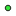

<!doctype html>
<html lang="en">
    <head>
        <meta charset="utf-8">
        <meta http-equiv="X-UA-Compatible" content="IE=edge">
        <meta name="viewport" content="initial-scale=1,user-scalable=no,maximum-scale=1,width=device-width">
        <meta name="mobile-web-app-capable" content="yes">
        <meta name="apple-mobile-web-app-capable" content="yes">
        <link rel="stylesheet" href="css/leaflet.css">
        <link rel="stylesheet" href="css/qgis2web.css"><link rel="stylesheet" href="css/fontawesome-all.min.css">
        <link rel="stylesheet" href="css/MarkerCluster.css">
        <link rel="stylesheet" href="css/MarkerCluster.Default.css">
        <link rel="stylesheet" href="css/leaflet-measure.css">
        <style>
        html, body, #map {
            width: 100%;
            height: 100%;
            padding: 0;
            margin: 0;
        }
        </style>
        <title></title>
    </head>
    <body>
        <div id="map">
        </div>
        <script src="js/qgis2web_expressions.js"></script>
        <script src="js/leaflet.js"></script>
        <script src="js/leaflet-svg-shape-markers.min.js"></script>
        <script src="js/leaflet.rotatedMarker.js"></script>
        <script src="js/leaflet.pattern.js"></script>
        <script src="js/leaflet-hash.js"></script>
        <script src="js/Autolinker.min.js"></script>
        <script src="js/rbush.min.js"></script>
        <script src="js/labelgun.min.js"></script>
        <script src="js/labels.js"></script>
        <script src="js/leaflet.wms.js"></script>
        <script src="js/leaflet-measure.js"></script>
        <script src="js/leaflet.markercluster.js"></script>
        <script src="data/SnowbasinPropertyLine_0.js"></script>
        <script src="data/ExistingBuildings_2.js"></script>
        <script src="data/ExistingForceMain_3.js"></script>
        <script src="data/Sewerlines_4.js"></script>
        <script src="data/Manholes_5.js"></script>
        <script src="data/WellHouseWaterlines_6.js"></script>
        <script src="data/Waterlines_7.js"></script>
        <script src="data/ExistingWells_8.js"></script>
        <script src="data/NewWells_9.js"></script>
        <script src="data/PRVs_10.js"></script>
        <script src="data/Tanks_11.js"></script>
        <script>
        var map = L.map('map', {
            zoomControl:true, maxZoom:28, minZoom:1
        }).fitBounds([[41.15967554211296,-111.94636864726259],[41.251171319609654,-111.70322037545105]]);
        var hash = new L.Hash(map);
        map.attributionControl.setPrefix('<a href="https://github.com/tomchadwin/qgis2web" target="_blank">qgis2web</a> &middot; <a href="https://leafletjs.com" title="A JS library for interactive maps">Leaflet</a> &middot; <a href="https://qgis.org">QGIS</a>');
        var autolinker = new Autolinker({truncate: {length: 30, location: 'smart'}});
        var measureControl = new L.Control.Measure({
            position: 'topleft',
            primaryLengthUnit: 'feet',
            secondaryLengthUnit: 'miles',
            primaryAreaUnit: 'sqfeet',
            secondaryAreaUnit: 'sqmiles'
        });
        measureControl.addTo(map);
        document.getElementsByClassName('leaflet-control-measure-toggle')[0]
        .innerHTML = '';
        document.getElementsByClassName('leaflet-control-measure-toggle')[0]
        .className += ' fas fa-ruler';
        var bounds_group = new L.featureGroup([]);
        function setBounds() {
        }
        function pop_SnowbasinPropertyLine_0(feature, layer) {
        }

        function style_SnowbasinPropertyLine_0_0() {
            return {
                pane: 'pane_SnowbasinPropertyLine_0',
                opacity: 1,
                color: 'rgba(185,90,114,1.0)',
                dashArray: '10,5',
                lineCap: 'square',
                lineJoin: 'bevel',
                weight: 3.0,
                fillOpacity: 0,
                interactive: true,
            }
        }
        map.createPane('pane_SnowbasinPropertyLine_0');
        map.getPane('pane_SnowbasinPropertyLine_0').style.zIndex = 400;
        map.getPane('pane_SnowbasinPropertyLine_0').style['mix-blend-mode'] = 'normal';
        var layer_SnowbasinPropertyLine_0 = new L.geoJson(json_SnowbasinPropertyLine_0, {
            attribution: '',
            interactive: true,
            dataVar: 'json_SnowbasinPropertyLine_0',
            layerName: 'layer_SnowbasinPropertyLine_0',
            pane: 'pane_SnowbasinPropertyLine_0',
            onEachFeature: pop_SnowbasinPropertyLine_0,
            style: style_SnowbasinPropertyLine_0_0,
        });
        bounds_group.addLayer(layer_SnowbasinPropertyLine_0);
        map.addLayer(layer_SnowbasinPropertyLine_0);
        map.createPane('pane_Hexagon15cm_1');
        map.getPane('pane_Hexagon15cm_1').style.zIndex = 401;
        var layer_Hexagon15cm_1 = L.WMS.layer("https://discover.agrc.utah.gov/login/path/turtle-prague-shampoo-cherry/wms", "30cm_hexagon_utah", {
            pane: 'pane_Hexagon15cm_1',
            format: 'image/png',
            uppercase: true,
            transparent: true,
            continuousWorld : true,
            tiled: true,
            info_format: 'text/html',
            opacity: 1,
            identify: false,
            attribution: '',
        });
        map.addLayer(layer_Hexagon15cm_1);
        function pop_ExistingBuildings_2(feature, layer) {
            var popupContent = '<table>\
                    <tr>\
                        <th scope="row">Building</th>\
                        <td>' + (feature.properties['Building'] !== null ? autolinker.link(feature.properties['Building'].toLocaleString()) : '') + '</td>\
                    </tr>\
                    <tr>\
                        <th scope="row">Elevation</th>\
                        <td>' + (feature.properties['Elevation'] !== null ? autolinker.link(feature.properties['Elevation'].toLocaleString()) : '') + '</td>\
                    </tr>\
                </table>';
            layer.bindPopup(popupContent, {maxHeight: 400});
        }

        function style_ExistingBuildings_2_0() {
            return {
                pane: 'pane_ExistingBuildings_2',
                opacity: 1,
                color: 'rgba(35,35,35,1.0)',
                dashArray: '',
                lineCap: 'butt',
                lineJoin: 'miter',
                weight: 1.0, 
                fill: true,
                fillOpacity: 1,
                fillColor: 'rgba(255,165,48,1.0)',
                interactive: true,
            }
        }
        map.createPane('pane_ExistingBuildings_2');
        map.getPane('pane_ExistingBuildings_2').style.zIndex = 402;
        map.getPane('pane_ExistingBuildings_2').style['mix-blend-mode'] = 'normal';
        var layer_ExistingBuildings_2 = new L.geoJson(json_ExistingBuildings_2, {
            attribution: '',
            interactive: true,
            dataVar: 'json_ExistingBuildings_2',
            layerName: 'layer_ExistingBuildings_2',
            pane: 'pane_ExistingBuildings_2',
            onEachFeature: pop_ExistingBuildings_2,
            style: style_ExistingBuildings_2_0,
        });
        bounds_group.addLayer(layer_ExistingBuildings_2);
        map.addLayer(layer_ExistingBuildings_2);
        function pop_ExistingForceMain_3(feature, layer) {
        }

        function style_ExistingForceMain_3_0() {
            return {
                pane: 'pane_ExistingForceMain_3',
                opacity: 1,
                color: 'rgba(144,42,16,1.0)',
                dashArray: '',
                lineCap: 'square',
                lineJoin: 'bevel',
                weight: 1.0,
                fillOpacity: 0,
                interactive: true,
            }
        }
        map.createPane('pane_ExistingForceMain_3');
        map.getPane('pane_ExistingForceMain_3').style.zIndex = 403;
        map.getPane('pane_ExistingForceMain_3').style['mix-blend-mode'] = 'normal';
        var layer_ExistingForceMain_3 = new L.geoJson(json_ExistingForceMain_3, {
            attribution: '',
            interactive: true,
            dataVar: 'json_ExistingForceMain_3',
            layerName: 'layer_ExistingForceMain_3',
            pane: 'pane_ExistingForceMain_3',
            onEachFeature: pop_ExistingForceMain_3,
            style: style_ExistingForceMain_3_0,
        });
        bounds_group.addLayer(layer_ExistingForceMain_3);
        map.addLayer(layer_ExistingForceMain_3);
        function pop_Sewerlines_4(feature, layer) {
        }

        function style_Sewerlines_4_0() {
            return {
                pane: 'pane_Sewerlines_4',
                opacity: 1,
                color: 'rgba(20,183,42,1.0)',
                dashArray: '',
                lineCap: 'square',
                lineJoin: 'bevel',
                weight: 1.0,
                fillOpacity: 0,
                interactive: true,
            }
        }
        map.createPane('pane_Sewerlines_4');
        map.getPane('pane_Sewerlines_4').style.zIndex = 404;
        map.getPane('pane_Sewerlines_4').style['mix-blend-mode'] = 'normal';
        var layer_Sewerlines_4 = new L.geoJson(json_Sewerlines_4, {
            attribution: '',
            interactive: true,
            dataVar: 'json_Sewerlines_4',
            layerName: 'layer_Sewerlines_4',
            pane: 'pane_Sewerlines_4',
            onEachFeature: pop_Sewerlines_4,
            style: style_Sewerlines_4_0,
        });
        bounds_group.addLayer(layer_Sewerlines_4);
        map.addLayer(layer_Sewerlines_4);
        function pop_Manholes_5(feature, layer) {
        }

        function style_Manholes_5_0() {
            return {
                pane: 'pane_Manholes_5',
                radius: 2.4,
                opacity: 1,
                color: 'rgba(35,35,35,1.0)',
                dashArray: '',
                lineCap: 'butt',
                lineJoin: 'miter',
                weight: 1,
                fill: true,
                fillOpacity: 1,
                fillColor: 'rgba(53,231,61,1.0)',
                interactive: true,
            }
        }
        map.createPane('pane_Manholes_5');
        map.getPane('pane_Manholes_5').style.zIndex = 405;
        map.getPane('pane_Manholes_5').style['mix-blend-mode'] = 'normal';
        var layer_Manholes_5 = new L.geoJson(json_Manholes_5, {
            attribution: '',
            interactive: true,
            dataVar: 'json_Manholes_5',
            layerName: 'layer_Manholes_5',
            pane: 'pane_Manholes_5',
            onEachFeature: pop_Manholes_5,
            pointToLayer: function (feature, latlng) {
                var context = {
                    feature: feature,
                    variables: {}
                };
                return L.circleMarker(latlng, style_Manholes_5_0(feature));
            },
        });
        bounds_group.addLayer(layer_Manholes_5);
        map.addLayer(layer_Manholes_5);
        function pop_WellHouseWaterlines_6(feature, layer) {
        }

        function style_WellHouseWaterlines_6_0() {
            return {
                pane: 'pane_WellHouseWaterlines_6',
                opacity: 1,
                color: 'rgba(231,231,80,1.0)',
                dashArray: '',
                lineCap: 'square',
                lineJoin: 'bevel',
                weight: 1.0,
                fillOpacity: 0,
                interactive: true,
            }
        }
        map.createPane('pane_WellHouseWaterlines_6');
        map.getPane('pane_WellHouseWaterlines_6').style.zIndex = 406;
        map.getPane('pane_WellHouseWaterlines_6').style['mix-blend-mode'] = 'normal';
        var layer_WellHouseWaterlines_6 = new L.geoJson(json_WellHouseWaterlines_6, {
            attribution: '',
            interactive: true,
            dataVar: 'json_WellHouseWaterlines_6',
            layerName: 'layer_WellHouseWaterlines_6',
            pane: 'pane_WellHouseWaterlines_6',
            onEachFeature: pop_WellHouseWaterlines_6,
            style: style_WellHouseWaterlines_6_0,
        });
        bounds_group.addLayer(layer_WellHouseWaterlines_6);
        map.addLayer(layer_WellHouseWaterlines_6);
        function pop_Waterlines_7(feature, layer) {
        }

        function style_Waterlines_7_0() {
            return {
                pane: 'pane_Waterlines_7',
                opacity: 1,
                color: 'rgba(97,206,225,1.0)',
                dashArray: '',
                lineCap: 'square',
                lineJoin: 'bevel',
                weight: 1.0,
                fillOpacity: 0,
                interactive: true,
            }
        }
        map.createPane('pane_Waterlines_7');
        map.getPane('pane_Waterlines_7').style.zIndex = 407;
        map.getPane('pane_Waterlines_7').style['mix-blend-mode'] = 'normal';
        var layer_Waterlines_7 = new L.geoJson(json_Waterlines_7, {
            attribution: '',
            interactive: true,
            dataVar: 'json_Waterlines_7',
            layerName: 'layer_Waterlines_7',
            pane: 'pane_Waterlines_7',
            onEachFeature: pop_Waterlines_7,
            style: style_Waterlines_7_0,
        });
        bounds_group.addLayer(layer_Waterlines_7);
        map.addLayer(layer_Waterlines_7);
        function pop_ExistingWells_8(feature, layer) {
            var popupContent = '<table>\
                    <tr>\
                        <td colspan="2">' + (feature.properties['Well'] !== null ? autolinker.link(feature.properties['Well'].toLocaleString()) : '') + '</td>\
                    </tr>\
                    <tr>\
                        <td colspan="2">' + (feature.properties['Well Elev'] !== null ? autolinker.link(feature.properties['Well Elev'].toLocaleString()) : '') + '</td>\
                    </tr>\
                    <tr>\
                        <td colspan="2">' + (feature.properties['Flow Rate'] !== null ? autolinker.link(feature.properties['Flow Rate'].toLocaleString()) : '') + '</td>\
                    </tr>\
                </table>';
            layer.bindPopup(popupContent, {maxHeight: 400});
        }

        function style_ExistingWells_8_0() {
            return {
                pane: 'pane_ExistingWells_8',
                radius: 4.0,
                opacity: 1,
                color: 'rgba(35,35,35,1.0)',
                dashArray: '',
                lineCap: 'butt',
                lineJoin: 'miter',
                weight: 1,
                fill: true,
                fillOpacity: 1,
                fillColor: 'rgba(19,32,207,1.0)',
                interactive: true,
            }
        }
        map.createPane('pane_ExistingWells_8');
        map.getPane('pane_ExistingWells_8').style.zIndex = 408;
        map.getPane('pane_ExistingWells_8').style['mix-blend-mode'] = 'normal';
        var layer_ExistingWells_8 = new L.geoJson(json_ExistingWells_8, {
            attribution: '',
            interactive: true,
            dataVar: 'json_ExistingWells_8',
            layerName: 'layer_ExistingWells_8',
            pane: 'pane_ExistingWells_8',
            onEachFeature: pop_ExistingWells_8,
            pointToLayer: function (feature, latlng) {
                var context = {
                    feature: feature,
                    variables: {}
                };
                return L.circleMarker(latlng, style_ExistingWells_8_0(feature));
            },
        });
        bounds_group.addLayer(layer_ExistingWells_8);
        map.addLayer(layer_ExistingWells_8);
        function pop_NewWells_9(feature, layer) {
            var popupContent = '<table>\
                    <tr>\
                        <th scope="row">Well</th>\
                        <td>' + (feature.properties['Well'] !== null ? autolinker.link(feature.properties['Well'].toLocaleString()) : '') + '</td>\
                    </tr>\
                    <tr>\
                        <th scope="row">Well Elev</th>\
                        <td>' + (feature.properties['Well Elev'] !== null ? autolinker.link(feature.properties['Well Elev'].toLocaleString()) : '') + '</td>\
                    </tr>\
                    <tr>\
                        <th scope="row">Flow Rate</th>\
                        <td>' + (feature.properties['Flow Rate'] !== null ? autolinker.link(feature.properties['Flow Rate'].toLocaleString()) : '') + '</td>\
                    </tr>\
                </table>';
            layer.bindPopup(popupContent, {maxHeight: 400});
        }

        function style_NewWells_9_0() {
            return {
                pane: 'pane_NewWells_9',
                radius: 4.0,
                opacity: 1,
                color: 'rgba(35,35,35,1.0)',
                dashArray: '',
                lineCap: 'butt',
                lineJoin: 'miter',
                weight: 1,
                fill: true,
                fillOpacity: 1,
                fillColor: 'rgba(234,240,43,1.0)',
                interactive: true,
            }
        }
        map.createPane('pane_NewWells_9');
        map.getPane('pane_NewWells_9').style.zIndex = 409;
        map.getPane('pane_NewWells_9').style['mix-blend-mode'] = 'normal';
        var layer_NewWells_9 = new L.geoJson(json_NewWells_9, {
            attribution: '',
            interactive: true,
            dataVar: 'json_NewWells_9',
            layerName: 'layer_NewWells_9',
            pane: 'pane_NewWells_9',
            onEachFeature: pop_NewWells_9,
            pointToLayer: function (feature, latlng) {
                var context = {
                    feature: feature,
                    variables: {}
                };
                return L.circleMarker(latlng, style_NewWells_9_0(feature));
            },
        });
        var cluster_NewWells_9 = new L.MarkerClusterGroup({showCoverageOnHover: false,
            spiderfyDistanceMultiplier: 2});
        cluster_NewWells_9.addLayer(layer_NewWells_9);

        bounds_group.addLayer(layer_NewWells_9);
        cluster_NewWells_9.addTo(map);
        function pop_PRVs_10(feature, layer) {
            var popupContent = '<table>\
                    <tr>\
                        <th scope="row">Name</th>\
                        <td>' + (feature.properties['Name'] !== null ? autolinker.link(feature.properties['Name'].toLocaleString()) : '') + '</td>\
                    </tr>\
                    <tr>\
                        <th scope="row">PSI IN</th>\
                        <td>' + (feature.properties['PSI IN'] !== null ? autolinker.link(feature.properties['PSI IN'].toLocaleString()) : '') + '</td>\
                    </tr>\
                    <tr>\
                        <th scope="row">PSI OUT</th>\
                        <td>' + (feature.properties['PSI OUT'] !== null ? autolinker.link(feature.properties['PSI OUT'].toLocaleString()) : '') + '</td>\
                    </tr>\
                    <tr>\
                        <th scope="row">Elevation</th>\
                        <td>' + (feature.properties['Elevation'] !== null ? autolinker.link(feature.properties['Elevation'].toLocaleString()) : '') + '</td>\
                    </tr>\
                </table>';
            layer.bindPopup(popupContent, {maxHeight: 400});
        }

        function style_PRVs_10_0() {
            return {
                pane: 'pane_PRVs_10',
                radius: 4.0,
                opacity: 1,
                color: 'rgba(35,35,35,1.0)',
                dashArray: '',
                lineCap: 'butt',
                lineJoin: 'miter',
                weight: 1,
                fill: true,
                fillOpacity: 1,
                fillColor: 'rgba(255,0,0,1.0)',
                interactive: true,
            }
        }
        map.createPane('pane_PRVs_10');
        map.getPane('pane_PRVs_10').style.zIndex = 410;
        map.getPane('pane_PRVs_10').style['mix-blend-mode'] = 'normal';
        var layer_PRVs_10 = new L.geoJson(json_PRVs_10, {
            attribution: '',
            interactive: true,
            dataVar: 'json_PRVs_10',
            layerName: 'layer_PRVs_10',
            pane: 'pane_PRVs_10',
            onEachFeature: pop_PRVs_10,
            pointToLayer: function (feature, latlng) {
                var context = {
                    feature: feature,
                    variables: {}
                };
                return L.shapeMarker(latlng, style_PRVs_10_0(feature));
            },
        });
        var cluster_PRVs_10 = new L.MarkerClusterGroup({showCoverageOnHover: false,
            spiderfyDistanceMultiplier: 2});
        cluster_PRVs_10.addLayer(layer_PRVs_10);

        bounds_group.addLayer(layer_PRVs_10);
        cluster_PRVs_10.addTo(map);
        function pop_Tanks_11(feature, layer) {
            var popupContent = '<table>\
                    <tr>\
                        <th scope="row">Tank</th>\
                        <td>' + (feature.properties['Tank'] !== null ? autolinker.link(feature.properties['Tank'].toLocaleString()) : '') + '</td>\
                    </tr>\
                    <tr>\
                        <th scope="row">OF Elev</th>\
                        <td>' + (feature.properties['OF Elev'] !== null ? autolinker.link(feature.properties['OF Elev'].toLocaleString()) : '') + '</td>\
                    </tr>\
                    <tr>\
                        <th scope="row">Volume</th>\
                        <td>' + (feature.properties['Volume'] !== null ? autolinker.link(feature.properties['Volume'].toLocaleString()) : '') + '</td>\
                    </tr>\
                </table>';
            layer.bindPopup(popupContent, {maxHeight: 400});
        }

        function style_Tanks_11_0() {
            return {
                pane: 'pane_Tanks_11',
                radius: 4.4,
                opacity: 1,
                color: 'rgba(35,35,35,1.0)',
                dashArray: '',
                lineCap: 'butt',
                lineJoin: 'miter',
                weight: 1,
                fill: true,
                fillOpacity: 1,
                fillColor: 'rgba(233,196,177,1.0)',
                interactive: true,
            }
        }
        map.createPane('pane_Tanks_11');
        map.getPane('pane_Tanks_11').style.zIndex = 411;
        map.getPane('pane_Tanks_11').style['mix-blend-mode'] = 'normal';
        var layer_Tanks_11 = new L.geoJson(json_Tanks_11, {
            attribution: '',
            interactive: true,
            dataVar: 'json_Tanks_11',
            layerName: 'layer_Tanks_11',
            pane: 'pane_Tanks_11',
            onEachFeature: pop_Tanks_11,
            pointToLayer: function (feature, latlng) {
                var context = {
                    feature: feature,
                    variables: {}
                };
                return L.circleMarker(latlng, style_Tanks_11_0(feature));
            },
        });
        var cluster_Tanks_11 = new L.MarkerClusterGroup({showCoverageOnHover: false,
            spiderfyDistanceMultiplier: 2});
        cluster_Tanks_11.addLayer(layer_Tanks_11);

        bounds_group.addLayer(layer_Tanks_11);
        cluster_Tanks_11.addTo(map);
        var baseMaps = {};
        L.control.layers(baseMaps,{' Tanks': cluster_Tanks_11,' PRVs': cluster_PRVs_10,' NewWells': cluster_NewWells_9,' ExistingWells': layer_ExistingWells_8,' Waterlines': layer_Waterlines_7,' Well House Waterlines': layer_WellHouseWaterlines_6,' Manholes': layer_Manholes_5,' Sewerlines': layer_Sewerlines_4,' ExistingForceMain': layer_ExistingForceMain_3,' Existing Buildings': layer_ExistingBuildings_2,"Hexagon 15cm": layer_Hexagon15cm_1,' SnowbasinPropertyLine': layer_SnowbasinPropertyLine_0,}).addTo(map);
        setBounds();
        </script>
    </body>
</html>
